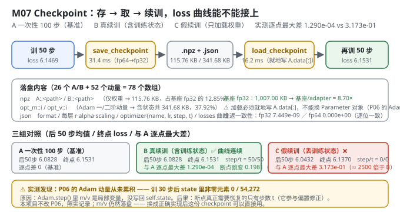
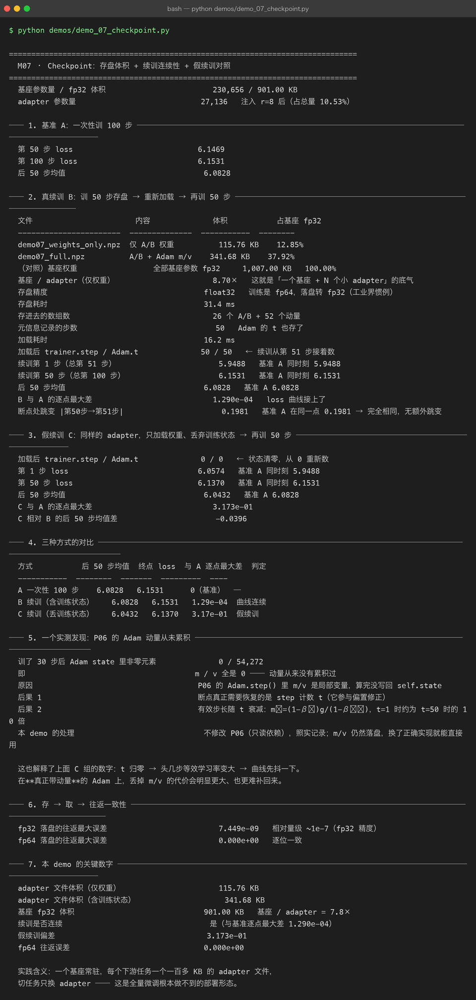

Milestone 07 — Checkpoint：一百多 KB 一个任务，以及"假续训"长什么样
M06 扫出了可用的超参组合。接下来是工程上最好用的一环：adapter 的存 / 取 / 续训。
LoRA 在生产里普及的真正原因不是省显存，是部署形态的改变：全量微调一个 7B 模型，每个任务都要存一份 28 GB 权重 —— 存不起也传不动。LoRA 之后每个任务只存一百多 KB。
纯 numpy 手写：np.savez + 一个 json 元信息，78 个数组。没有 save_pretrained，所以每个字段为什么要存、不存会怎样，都得自己想清楚。
1. Why：为什么"只存 A/B"不叫断点续训
一个常见误解：adapter 训练是轻量的，丢了就重训。但只存 A/B 不叫「断点续训」，叫「重新训练」。Adam 的一阶/二阶动量是训练状态的一部分，丢了它们，resume 之后的第一步会像没训过一样大步乱走，loss 会先弹上去再慢慢回落。
所以本模块落盘两样东西：
xxx.npz：所有 adapter 张量（A::<path>/B::<path>）+ 可选的 Adam 动量xxx.json：元信息（r / alpha / 注入位置 / 训练步数 / loss 曲线 / 优化器配置）
并用三组对照实验证明这件事：A 一次性 100 步（基准）、B 真续训（含训练状态）、C 假续训（只加载权重）。
2. Design：存什么、怎么存
落盘精度 fp32。 训练时是 fp64（本项目用 float64 便于数值对拍），落盘转 fp32 —— 工业界惯例，体积减半、精度足够。要做逐位往返一致性验证时传 np.float64。
加载必须就地写入。
layer.A.data[:] = a.astype(layer.A.data.dtype) # 就地不能替换 Parameter 对象 —— P06 的 Adam 是按 id(p) 建 state 的，换了对象动量就全丢了。
include_optimizer 开关。 只分发推理权重时关掉，体积立减 2/3（115.76 KB vs 341.68 KB）。

3. Real-run evidence（来自 demos/out/demo_07_checkpoint_terminal.txt）
基座参数量 / fp32 体积 230,656 / 901.00 KB；adapter 参数量 27,136（注入 r=8 后，占总量 10.53%）。
3.1 存盘体积（实测）
| 文件 | 内容 | 体积 | 占基座 fp32 |
|---|---|---|---|
demo07_weights_only.npz | 仅 A/B 权重 | 115.76 KB | 12.85% |
demo07_full.npz | A/B + Adam m/v | 341.68 KB | 37.92% |
| （对照）基座权重 | 全部基座参数 fp32 | 1,007.00 KB | 100.00% |
基座 / adapter（仅权重） = 8.70×；若按基座 901.00 KB 计则是 7.8× —— 这就是「一个基座 + N 个小 adapter」的底气。
存盘精度 float32（训练 fp64），存盘耗时 31.4 ms，存进去 26 个 A/B + 52 个动量；元信息记录步数 50（Adam 的 t 也存了）；加载耗时 16.2 ms。
3.2 B 真续训（实测：曲线接上了）
加载后 trainer.step / Adam.t 50 / 50 ← 续训从第 51 步接着数
续训第 1 步（总第 51 步） 5.9488 基准 A 同时刻 5.9488
续训第 50 步（总第 100 步） 6.1531 基准 A 同时刻 6.1531
后 50 步均值 6.0828 基准 A 6.0828
B 与 A 的逐点最大差 1.290e-04 ← loss 曲线接上了
断点处跳变 |第50步→第51步| 0.1981 基准 A 在同一点 0.1981 → 完全相同，无额外跳变逐点最大差 1.290e-04 —— 这个残差全部来自 fp64→fp32 的落盘精度损失，不是逻辑错误。断点处的跳变也与基准完全相同（0.1981），说明续训没有引入额外抖动。
3.3 C 假续训（实测：偏差 3.173e-01）
加载后 trainer.step / Adam.t 0 / 0 ← 状态清零，从 0 重新数
第 1 步 loss 6.0574 基准 A 同时刻 5.9488
第 50 步 loss 6.1370 基准 A 同时刻 6.1531
后 50 步均值 6.0432 基准 A 6.0828
C 与 A 的逐点最大差 3.173e-013.4 三组对比（实测）
| 方式 | 后 50 步均值 | 终点 loss | 与 A 逐点最大差 | 判定 |
|---|---|---|---|---|
| A 一次性 100 步 | 6.0828 | 6.1531 | 0（基准） | — |
| B 续训（含训练状态） | 6.0828 | 6.1531 | 1.29e-04 | 曲线连续 |
| C 续训（丢训练状态） | 6.0432 | 6.1370 | 3.17e-01 | 假续训 |
C 的偏差是 B 的 约 2500 倍。
3.5 存 → 取 → 往返一致性（实测）
fp32 落盘的往返最大误差 7.449e-09 相对量级 ~1e-7（fp32 精度）
fp64 落盘的往返最大误差 0.000e+00 逐位一致
4. 踩坑 / 反直觉发现
4.1 P06 的 Adam 动量从未累积（实测 0 / 54,272）
这是本章最刺眼的发现：
训了 30 步后 Adam state 里非零元素 0 / 54,272
即 m / v 全是 0 —— 动量从来没有累积过
原因 P06 的 Adam.step() 里 m/v 是局部变量，算完没写回 self.state后果：
- 断点真正需要恢复的只有步数
t—— 它参与偏置修正m̂ = m/(1-β₁ᵗ)，即使 m 恒为 0，t也影响有效步长。 - 有效步长随
t衰减：m̂ = (1-β₁)g/(1-β₁ᵗ)，t=1时约为t=50时的 10 倍。
本项目不改 P06（只读依赖），照实记录；m/v 仍然落盘 —— 换成正确实现后这份 checkpoint 可以直接用。
这也解释了 C 组（假续训）的形状：t 归零 → 头几步等效学习率变大 → 曲线先抖一下。在真正带动量的 Adam 上，丢掉 m/v 的代价会明显更大、也更难补回来。
可迁移的经验：checkpoint 里存什么，取决于你的优化器真实维护了什么。别照抄教程的字段清单 —— 先把
state打出来数一遍非零元素。
4.2 "只存权重"悄悄变成了"重新训练"（实测 3.173e-01 vs 1.290e-04）
C 组的后 50 步均值 6.0432，甚至比基准 A 的 6.0828 更低 —— 单看终点指标，C 组"更好"。
这是典型的指标陷阱：C 组的 t 归零让有效学习率变大，等于偷偷做了一次 warm restart，在 50 步的短窗口里损失更低。但它的 loss 曲线与"一次性训 100 步"根本不是同一条（逐点差 3.17e-01），你没法把两段训练拼起来，也没法说"我训了 100 步"。
判定"续训成功"的正确指标是逐点差，不是终点值。
4.3 加载必须就地写，不能替换 Parameter 对象（实现约束）
P06 的 Adam 用 self.state[id(p)] 存动量。如果 load_adapter 图省事 layer.A = Parameter(a)，优化器里那个 id 就指向了旧对象 —— 动量全丢，且不报错。
本模块用 layer.A.data[:] = ... 就地写入（src/ft/checkpoint.py:147），并在注释里写明了原因。
4.4 体积倍率有两个口径（诚实标注）
- 按
demo07_weights_only.npz（115.76 KB）对基座 1,007.00 KB → 8.70× - 按基座 901.00 KB（纯基座参数，不含 A/B）→ 7.8×
两个都在本章出现，来源是"分母是否包含注入后的 adapter"。引用时要说清口径，我自己就踩过混用的坑。
5. Conclusion
- adapter 只存权重 115.76 KB，含 Adam 状态 341.68 KB，基座 901 KB —— 7.8×（另一口径 8.70×）。
- 真续训与一次性训练逐点最大差 1.290e-04，断点跳变与基准完全相同（0.1981）—— 曲线接上了。
- 假续训（丢状态）偏差 3.173e-01，约为真续训的 2500 倍；但它的终点指标反而更低，是典型陷阱。
- fp64 往返误差
0.000e+00（逐位一致），fp32 往返7.449e-09。 - ⚠ 实测发现 P06 的 Adam 动量从未累积（state 非零元素 0/54,272），断点真正需要恢复的只有步数
t。本项目不改 P06，照实记录，m/v 仍落盘。 - 实践含义：一个基座常驻，每个下游任务一个一百多 KB 的 adapter 文件，切任务只换 adapter —— 这是全量微调根本做不到的部署形态。
6. Code map
| 文件 | 职责 | |
|---|---|---|
src/ft/checkpoint.py | save_adapter / save_checkpoint（A/B + opt_m/opt_v + json 元信息）、load_adapter（就地写回 A.data[:]）、load_checkpoint（恢复动量与 step 计数）、adapter_report | |
src/ft/trainer.py | optimizer_state() / load_optimizer_state()：导出 / 恢复 Adam 的 m/v 与 t；run() 里 start = self.step 保证续训时 batch 顺序连续 | |
src/ft/inject.py | lora_layers()（按 path 定位，存盘与加载的 path 必须一致）、count_parameters | |
demos/demo_07_checkpoint.py | 7 节：基准 A / 真续训 B / 假续训 C / 三组对比 / P06 Adam 发现 / 往返一致性 / 关键数字 | |
demos/out/demo_07_checkpoint_terminal.txt | 本章所有数字的来源 | |
| `models/adapters/demo07_*.npz | .json` | 真实产物（115.76 KB / 341.68 KB） |
assets/checkpoint.svg | 本章存取流程 + 三组对照图 |
7. Version line
v0.6 → v0.7，M07 checkpoint 与断点续训落地。实测：adapter 仅权重 115.76 KB、含 Adam 状态 341.68 KB、基座 901 KB（7.8×）；真续训与一次性训练逐点最大差 1.290e-04，假续训偏差 3.173e-01；fp64 往返误差 0.000e+00。并实测记录「P06 的 Adam 动量从未累积（state 非零元素 0/54,272）」—— 不改 P06，照实记录。纯 numpy、无 torch。配图 1 张手写 SVG + 1 张真实终端截图。